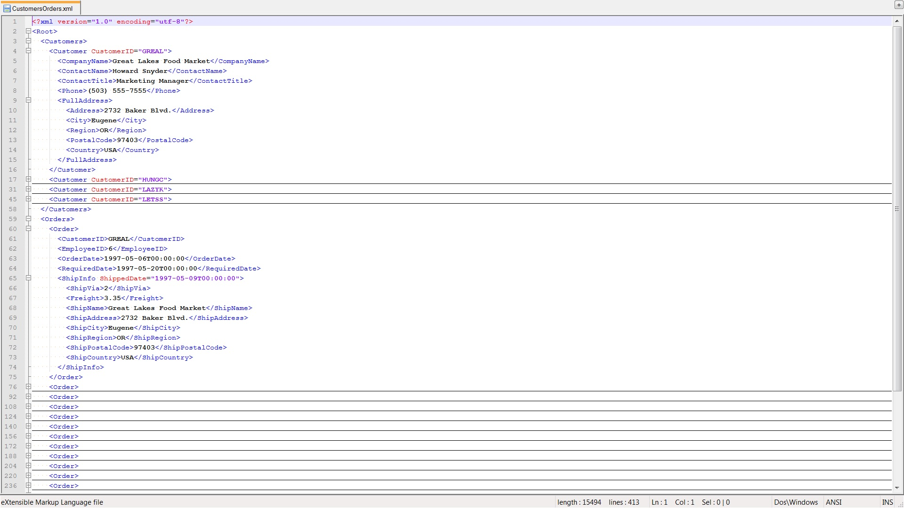

Modelling Example - Customers Orders¶
Introduction¶
Systems typically deal with large amounts of data. Data is often encoded in an Extensible Markup Language, which is defined in an XML Schema Definition.
This example is inspired by Microsoft’s sample XML File: Customers and Orders and associated Sample XSD File: Customers and Orders. In the screenshot below, we see a folding editor in which one instance of each data type is unfolded. 
All the files used in this example can be found at the example folder.
System Under Test¶
The system under test (SUT) communicates asynchronously.
The system under test has two input channels.
On one input channel, the system is always willing to receive a new customer (in xml).
On the other input channel, the system is always willing to receive a new order (in xml) of existing customers.
The system under test has one output channel. On the output channel, the system will send a report that contains the received customers and orders so far (in xml). After the initial report, a report will only be sent when additional input has been received. A new report can incorporate multiple inputs, i.e., not every input necessarily results in an output.
The code for this SUT is implemented in this java file.
TorXakis specification¶
Using the sample XSD File: Customers and Orders, it is straightforward to define not only the following Type Definitions
TYPEDEF RootType ::=
C_RootType { customers :: List_CustomerType ; orders :: List_OrderType }
ENDDEF
TYPEDEF List_CustomerType ::=
CNil_CustomerType
| Cstr_CustomerType { head :: CustomerType; tail :: List_CustomerType }
ENDDEF
TYPEDEF List_OrderType ::=
CNil_OrderType
| Cstr_OrderType { head :: OrderType; tail :: List_OrderType }
ENDDEF
TYPEDEF CustomerType ::=
C_CustomerType { companyName :: String
; contactName :: String
; contactTitle :: String
; phone :: String
; fax :: Conditional_string
; fullAddress :: AddressType
; customerID :: Int }
ENDDEF
TYPEDEF AddressType ::=
C_AddressType { address :: String
; city :: String
; region :: String
; postalCode :: String
; country :: String }
ENDDEF
TYPEDEF OrderType ::=
C_OrderType { customerID :: Int
; employeeID :: Int
; orderDate :: Int
; requiredDate :: Int
; shipInfo :: ShipInfoType }
ENDDEF
TYPEDEF ShipInfoType ::=
C_ShipInfoType { shipVia :: Int
; freight :: Int
; shipName :: String
; shipAddress :: String
; shipCity :: String
; shipRegion :: String
; shipPostalCode :: String
; shipCountry :: String
; shippedDate :: Conditional_dateTime }
ENDDEF
but also the following Function Definitions to capture the constraints on these types:
FUNCDEF isValid_RootType ( t :: RootType ) :: Bool ::=
isValid_List_CustomerType(customers(t), 0, CAbsent_Int)
/\ isValid_List_OrderType(orders(t), 0, CAbsent_Int)
/\ uniqueCustomerIDs(customers(t))
/\ validCustomerIDsInOrders(orders(t),customers(t))
ENDDEF
FUNCDEF uniqueCustomerIDs ( x :: List_CustomerType ) :: Bool ::=
IF (isCNil_CustomerType (x))
THEN True
ELSE not(containsCustomerID(customerID(head (x)), tail(x))) /\ uniqueCustomerIDs(tail(x))
FI
ENDDEF
FUNCDEF containsCustomerID ( cid :: Int; x :: List_CustomerType ) :: Bool ::=
IF (isCNil_CustomerType (x))
THEN False
ELSE IF ( customerID(head (x)) == cid )
THEN True
ELSE containsCustomerID (cid, tail(x))
FI
FI
ENDDEF
FUNCDEF validCustomerIDsInOrders ( o :: List_OrderType; c :: List_CustomerType ) :: Bool ::=
IF (isCNil_OrderType (o))
THEN True
ELSE containsCustomerID(customerID(head(o)), c) /\ validCustomerIDsInOrders (tail(o), c)
FI
ENDDEF
FUNCDEF isValid_List_CustomerType ( x :: List_CustomerType; min :: Int; max :: Conditional_Int ) :: Bool ::=
isValidElementsList_CustomerType(x)
/\ (min <= lengthList_CustomerType(x))
/\ (IF isCPresent_Int(max) THEN lengthList_CustomerType(x) <= value(max) ELSE True FI)
ENDDEF
FUNCDEF isValidElementsList_CustomerType ( x :: List_CustomerType ) :: Bool ::=
IF isCstr_CustomerType(x)
THEN isValid_CustomerType(head(x)) /\ isValidElementsList_CustomerType(tail(x))
ELSE True
FI
ENDDEF
FUNCDEF lengthList_CustomerType ( x :: List_CustomerType ) :: Int ::=
IF isCNil_CustomerType(x) THEN 0 ELSE 1 + lengthList_CustomerType(tail(x)) FI
ENDDEF
FUNCDEF isValid_CustomerType ( t :: CustomerType ) :: Bool ::=
isValid_string(companyName(t))
/\ isValid_string(contactName(t))
/\ isValid_string(contactTitle(t))
/\ isValid_string(phone(t))
/\ isValid_Conditional_string(fax(t))
/\ isValid_AddressType(fullAddress(t))
/\ isValid_unsignedLong(customerID(t))
ENDDEF
FUNCDEF isValid_AddressType ( t :: AddressType ) :: Bool ::=
isValid_string(address(t))
/\ isValid_string(city(t))
/\ isValid_string(region(t))
/\ isValid_string(postalCode(t))
/\ isValid_string(country(t))
ENDDEF
FUNCDEF isValid_List_OrderType ( x :: List_OrderType; min :: Int; max :: Conditional_Int ) :: Bool ::=
isValidElementsList_OrderType(x)
/\ (min <= lengthList_OrderType(x))
/\ (IF isCPresent_Int(max) THEN lengthList_OrderType(x) <= value(max) ELSE True FI)
ENDDEF
FUNCDEF isValidElementsList_OrderType ( x :: List_OrderType ) :: Bool ::=
IF isCstr_OrderType(x) THEN isValid_OrderType(head(x)) /\ isValidElementsList_OrderType(tail(x)) ELSE True FI
ENDDEF
FUNCDEF lengthList_OrderType ( x :: List_OrderType ) :: Int ::=
IF isCNil_OrderType(x) THEN 0 ELSE 1 + lengthList_OrderType(tail(x)) FI
ENDDEF
FUNCDEF isValid_OrderType ( t :: OrderType ) :: Bool ::=
isValid_unsignedLong(customerID(t))
/\ isValid_unsignedInt(employeeID(t))
/\ isValid_dateTime(orderDate(t))
/\ isValid_dateTime(requiredDate(t))
/\ isValid_ShipInfoType(shipInfo(t))
/\ (requiredDate(t) > orderDate(t))
/\ ( LET sd = shippedDate(shipInfo(t)) IN IF isCPresent_dateTime(sd) THEN value(sd) >= orderDate(t) ELSE True FI NI )
ENDDEF
FUNCDEF isValid_ShipInfoType ( t :: ShipInfoType ) :: Bool ::=
isValid_integer(shipVia(t))
/\ isValid_decimal(freight(t))
/\ isValid_string(shipName(t))
/\ isValid_string(shipAddress(t))
/\ isValid_string(shipCity(t))
/\ isValid_string(shipRegion(t))
/\ isValid_string(shipPostalCode(t))
/\ isValid_string(shipCountry(t))
/\ isValid_Conditional_dateTime(shippedDate(t))
ENDDEF
Since TorXakis assumes synchronous communication, yet the system under test communicates asynchronously, we have to include the asynchronous communication channel as well.
TYPEDEF StringList ::= Nil
| Cons { hd :: String
; tl :: StringList
}
ENDDEF
FUNCDEF add ( x :: String; l :: StringList ) :: StringList
::= IF isNil(l)
THEN Cons(x,Nil)
ELSE Cons(hd(l),add(x,tl(l)))
FI
ENDDEF
PROCDEF bufferedOutput [ IReport, OReport :: String ] (queue :: StringList) ::=
IReport ? r >-> bufferedOutput [ IReport, OReport ] (add (r , queue))
##
[[ isCons (queue) ]] =>> OReport ! hd(queue) >-> bufferedOutput [ IReport, OReport ] (tl(queue))
ENDDEF
Using these Type Definitions and Function Definitions we define the following Process Definition, Channel Definition, Model Definition, and Connection Definition:
PROCDEF handle [ Customer :: CustomerType; Order :: OrderType; Report :: String ] (cs :: List_CustomerType; os :: List_OrderType; changed :: Bool) EXIT ::=
[[ changed ]] =>> ( Report ! toXml ( C_RootType ( cs, os ) )
>-> handle [Customer , Order , Report ] ( cs , os , False)
)
##
( Customer ? c [[ isValid_CustomerType(c) /\ not ( containsCustomerID ( customerID ( c ) , cs ) ) ]]
>-> handle [Customer, Order, Report] ( Cstr_CustomerType ( c, cs ), os , True )
)
##
( [[ isCstr_CustomerType(cs) ]] =>> Order ? o [[ isValid_OrderType(o) /\ containsCustomerID ( customerID(o), cs ) ]]
>-> handle [Customer, Order, Report] ( cs, Cstr_OrderType ( o, os ) , True )
)
ENDDEF
CHANDEF Chans ::= Customer :: CustomerType
; Order :: OrderType
; Report :: String
ENDDEF
MODELDEF Model ::=
CHAN IN Customer, Order
CHAN OUT Report
BEHAVIOUR
HIDE [ HReport :: String ] IN
handle [ Customer, Order, HReport ] ( CNil_CustomerType, CNil_OrderType, True )
|[ HReport ]|
bufferedOutput [ HReport, Report ] (Nil)
NI
ENDDEF
CNECTDEF Sut
::=
CLIENTSOCK
CHAN OUT Customer HOST "localhost" PORT 7890
ENCODE Customer ? c -> ! toXml(c)
CHAN OUT Order HOST "localhost" PORT 7891
ENCODE Order ? o -> ! toXml(o)
CHAN IN Report HOST "localhost" PORT 7892
DECODE Report ! s <- ? s
ENDDEF
where the toXml functions are defined as follows
FUNCDEF toXml (r :: RootType) :: String ::=
"<Root>" ++
"<Customers>" ++
toXml (customers(r)) ++
"</Customers>" ++
"<Orders>" ++
toXml (orders(r)) ++
"</Orders>" ++
"</Root>"
ENDDEF
FUNCDEF toXml (lc :: List_CustomerType) :: String ::=
IF isCNil_CustomerType(lc)
THEN ""
ELSE toXml(head(lc)) ++ toXml(tail(lc))
FI
ENDDEF
FUNCDEF toXml (lo :: List_OrderType) :: String ::=
IF isCNil_OrderType(lo)
THEN ""
ELSE toXml(head(lo)) ++ toXml(tail(lo))
FI
ENDDEF
FUNCDEF toXml (c :: CustomerType) :: String ::=
"<Customer CustomerID=" ++ toString(customerID(c)) ++ ">" ++
"<CompanyName>"++ companyName(c) ++ "</CompanyName>"++
"<ContactName>" ++ contactName(c) ++ "</ContactName>" ++
"<ContactTitle>" ++ contactTitle(c) ++ "</ContactTitle>" ++
"<Phone>" ++ phone(c) ++ "</Phone>" ++
( IF isCPresent_string(fax(c)) THEN
"<Fax>" ++ value(fax(c)) ++ "</Fax>"
ELSE
""
FI
) ++
toXml(fullAddress(c)) ++
"</Customer>"
ENDDEF
FUNCDEF toXml (o :: OrderType) :: String ::=
"<Order>" ++
"<CustomerID>" ++ toString(customerID(o)) ++ "</CustomerID>" ++
"<EmployeeID>" ++ toString(employeeID(o)) ++ "</EmployeeID>" ++
"<OrderDate>" ++ toString(orderDate(o)) ++ "</OrderDate>" ++
"<RequiredDate>" ++ toString(requiredDate(o)) ++ "</RequiredDate>" ++
toXml(shipInfo(o)) ++
"</Order>"
ENDDEF
FUNCDEF toXml (a :: AddressType) :: String ::=
"<FullAddress>" ++
"<Address>" ++ address(a) ++ "</Address>" ++
"<City>" ++ city(a) ++ "</City>" ++
"<Region>" ++ region(a) ++ "</Region>" ++
"<PostalCode>" ++ postalCode(a) ++ "</PostalCode>" ++
"<Country>" ++ country(a) ++ "</Country>" ++
"</FullAddress>"
ENDDEF
FUNCDEF toXml (s :: ShipInfoType) :: String ::=
"<ShipInfo"++
( IF isCPresent_dateTime(shippedDate(s)) THEN
" ShippedDate=" ++ toString(value(shippedDate(s))) ++ ">"
ELSE
">"
FI
) ++
"<ShipVia>" ++ toString(shipVia(s)) ++ "</ShipVia>" ++
"<Freight>" ++ toString(freight(s)) ++ "</Freight>" ++
"<ShipName>" ++ shipName(s) ++ "</ShipName>" ++
"<ShipAddress>" ++ shipAddress(s) ++ "</ShipAddress>" ++
"<ShipCity>" ++ shipCity(s) ++ "</ShipCity>" ++
"<ShipRegion>" ++ shipRegion(s) ++ "</ShipRegion>" ++
"<ShipPostalCode>" ++ shipPostalCode(s) ++ "</ShipPostalCode>" ++
"<ShipCountry>" ++ shipCountry(s) ++ "</ShipCountry>" ++
"</ShipInfo>"
ENDDEF
Model Based Testing¶
Start the SUT: run the Java program in a command window.
$> java CustomersOrders
Start TorXakis: run the TorXakis with the CustomersOrders model described above in another command window.
$> torxakis CustomersOrders.txs
Set the Model and SUT for testing: In TorXakis type the following commands:
tester Model Sut
Test the SUT: In TorXakis type the following command:
test 10
TorXakis will perform an Order, Report or Customer action with various parameters at each step, as long as the SUT responds as expected or the number of test steps are reached, then finally conclude:
TXS >> .....1: OUT: Act { { ( Report, [ Report(Nil_Customer,Nil_Order) ] ) } }
TXS >> .....2: IN: Act { { ( Order, [ Order(49,6,-99,-21,ShipInfo(-52,-41,"A","P","PPAAA","U","K","",Absent_dateTime)) ] ) } }
TXS >> .....3: OUT: Act { { ( Report, [ Report(Nil_Customer,Cstr_Order(Order(49,6,-99,-21,ShipInfo(-52,-41,"A","P","PPAAA","U","K","",Absent_dateTime)),Nil_Order)) ] ) } }
TXS >> .....4: IN: Act { { ( Order, [ Order(49,15,-75,35,ShipInfo(46,-55,"A","","AT","PBY","","B",Present_dateTime(-4))) ] ) } }
TXS >> .....5: OUT: Act { { ( Report, [ Report(Nil_Customer,Cstr_Order(Order(49,15,-75,35,ShipInfo(46,-55,"A","","AT","PBY","","B",Present_dateTime(-4))),Cstr_Order(Order(49,6,-99,-21,ShipInfo(-52,-41,"A","P","PPAAA","U","K","",Absent_dateTime)),Nil_Order))) ] ) } }
TXS >> .....6: IN: Act { { ( Order, [ Order(49,16,-100,-97,ShipInfo(-98,-63,"","","Q","P","D","X",Absent_dateTime)) ] ) } }
TXS >> .....7: OUT: Act { { ( Report, [ Report(Nil_Customer,Cstr_Order(Order(49,16,-100,-97,ShipInfo(-98,-63,"","","Q","P","D","X",Absent_dateTime)),Cstr_Order(Order(49,15,-75,35,ShipInfo(46,-55,"A","","AT","PBY","","B",Present_dateTime(-4))),Cstr_Order(Order(49,6,-99,-21,ShipInfo(-52,-41,"A","P","PPAAA","U","K","",Absent_dateTime)),Nil_Order)))) ] ) } }
TXS >> .....8: IN: Act { { ( Order, [ Order(49,40,-65,77,ShipInfo(-28,-37,"X","D","B","B","","",Present_dateTime(-58))) ] ) } }
TXS >> .....9: OUT: Act { { ( Report, [ Report(Nil_Customer,Cstr_Order(Order(49,40,-65,77,ShipInfo(-28,-37,"X","D","B","B","","",Present_dateTime(-58))),Cstr_Order(Order(49,16,-100,-97,ShipInfo(-98,-63,"","","Q","P","D","X",Absent_dateTime)),Cstr_Order(Order(49,15,-75,35,ShipInfo(46,-55,"A","","AT","PBY","","B",Present_dateTime(-4))),Cstr_Order(Order(49,6,-99,-21,ShipInfo(-52,-41,"A","P","PPAAA","U","K","",Absent_dateTime)),Nil_Order))))) ] ) } }
TXS >> ....10: IN: Act { { ( Customer, [ Customer("P","H","","C",Absent_string,Address("X","P","A","BAD",""),90) ] ) } }
TXS >> PASS